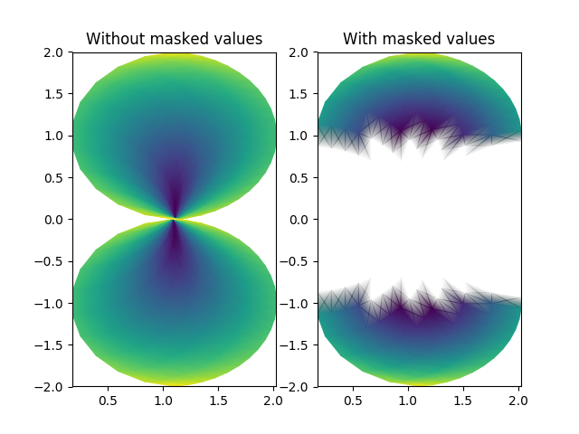

pcolormesh uses a QuadMesh, a faster generalization of pcolor, but with some restrictions.
This demo illustrates a bug in quadmesh with masked data.
import numpy as np
from matplotlib.pyplot import figure, show, savefig
from matplotlib import cm, colors
from numpy import ma
n = 12
x = np.linspace(-1.5, 1.5, n)
y = np.linspace(-1.5, 1.5, n * 2)
X, Y = np.meshgrid(x, y)
Qx = np.cos(Y) - np.cos(X)
Qz = np.sin(Y) + np.sin(X)
Qx = (Qx + 1.1)
Z = np.sqrt(X**2 + Y**2) / 5
Z = (Z - Z.min()) / (Z.max() - Z.min())
# The color array can include masked values:
Zm = ma.masked_where(np.abs(Qz) < 0.5 * np.max(Qz), Z)
fig = figure()
ax = fig.add_subplot(121)
ax.pcolormesh(Qx, Qz, Z, shading='gouraud')
ax.set_title('Without masked values')
ax = fig.add_subplot(122)
# You can control the color of the masked region:
# cmap = cm.RdBu
# cmap.set_bad('y', 1.0)
# ax.pcolormesh(Qx, Qz, Zm, cmap=cmap)
# Or use the default, which is transparent:
col = ax.pcolormesh(Qx, Qz, Zm, shading='gouraud')
ax.set_title('With masked values')
show()
Total running time of the script: ( 0 minutes 0.034 seconds)